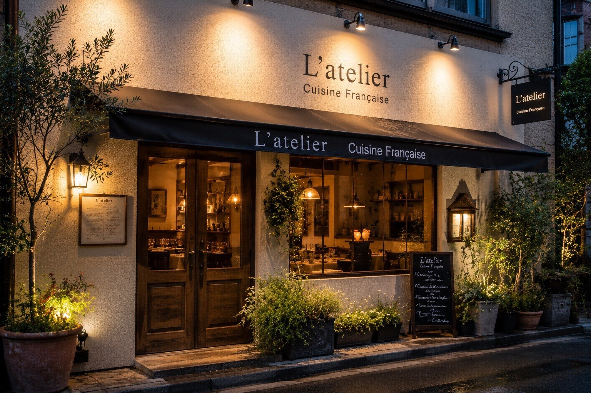
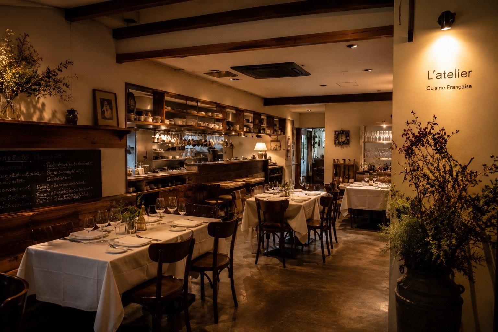
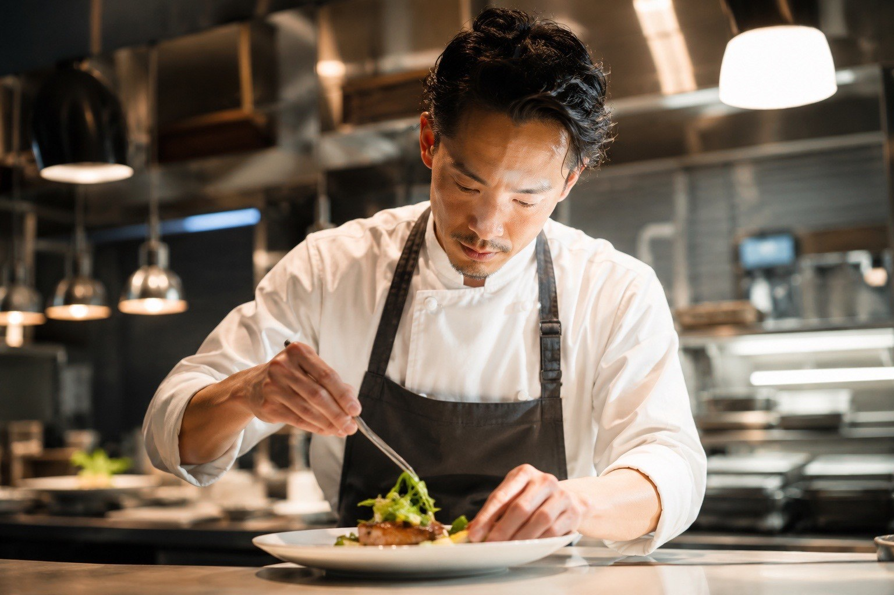

旬魚のカルパッチョ
彩り野菜とハーブのマリネ
その日の白身魚を薄く引き、レモンとオリーブオイルで。




Cuisine Française — Setagaya, Tokyo
市場からまっすぐ届いた、その日いちばんの食材を。
肩ひじ張らない、けれど確かなフランス料理を。
フランス料理には、どこか敷居が高いという印象がついてまわります。
けれど現地の厨房で過ごした日々が教えてくれたのは、まったく逆のことでした。フランス料理はもともと、人の暮らしのすぐ隣にあるものだということ。
記念日の食卓にも、仕事帰りの一皿にも。
そのどちらにも寄り添える店でありたいと願いながら、今日も厨房に立っています。
豊洲と地方の生産者から届く食材にあわせて、お品書きは月に一度書き換えています。
ここでご紹介するのは、その一例です。
その日の白身魚を薄く引き、レモンとオリーブオイルで。

当店の定番。ソーテルヌと共にどうぞ。

豆の甘みだけで仕立てた、静かなひと皿。

皮はぱりりと、身はしっとりと火を入れて。

骨からとったジュを煮詰めた、香り高いソースで。

デザートは月替わり。5〜6種からお選びいただけます。

平日のお昼は、1,000円からの日替わりランチを。
ゆっくりお過ごしいただくコースは、ランチ4,200円・ディナー8,800円から。記念日や会食には、少しだけ贅をこらしたコースもご用意しています。
日替わりプレート¥1,200
その日のメイン一皿、サラダ、自家製パン、コーヒー。
パスタランチ¥1,300
本日のパスタ2種からお選びいただけます。
週替わりランチ¥1,500
前菜、メイン、小さなデザートまで。
平日 11:30〜14:00 限定。ご予約なしでお立ち寄りいただけます。
スープランチ1,000円もございます。土日祝はコース料理のみとなります。
全24席。厨房を囲むように席を配し、火の音や皿の支度がそのまま伝わる造りにしました。
奥には4名様までの個室もございます。
サービス料はいただいておりません。
アレルギー・苦手な食材は、ご予約時にお知らせいただければ可能な限り対応いたします。